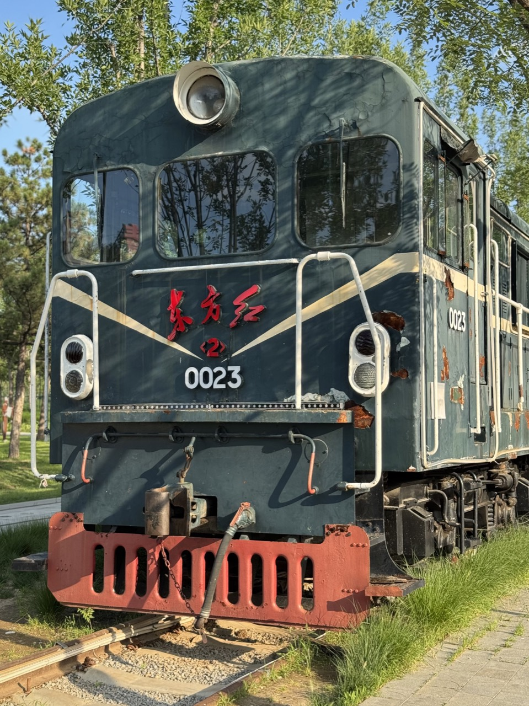

京张铁路遗址公园（一期）

作品：DFH2 0023 locomotive at Jingzhang Railway Park 20250706-173423.jpg
摄影：XiaYZ2023
拍摄日期（来源声明）：2025-07-06

2025年京张铁路遗址公园（一期）历史影像，主体为一期园内的东方红2型0023号机车；不代表场所全貌、现行陈列、季节或开放状态。
由来源原图等比例缩小，并进行JPEG压缩（质量参数72）；未裁切、重绘、去人物或换背景。成品为959×1280。页面按容器缩放、裁显；完整原图见来源。